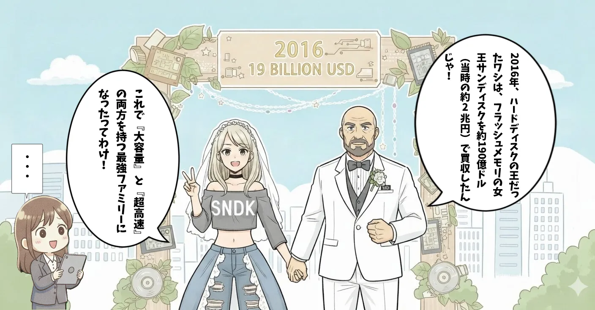
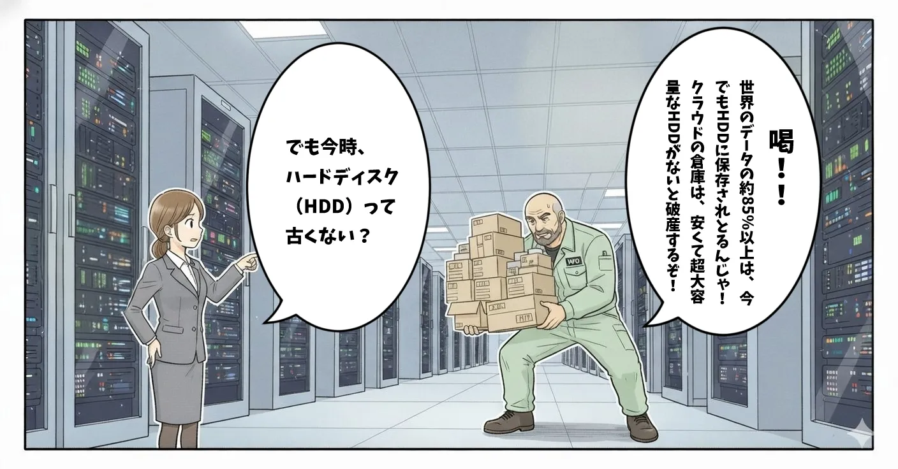
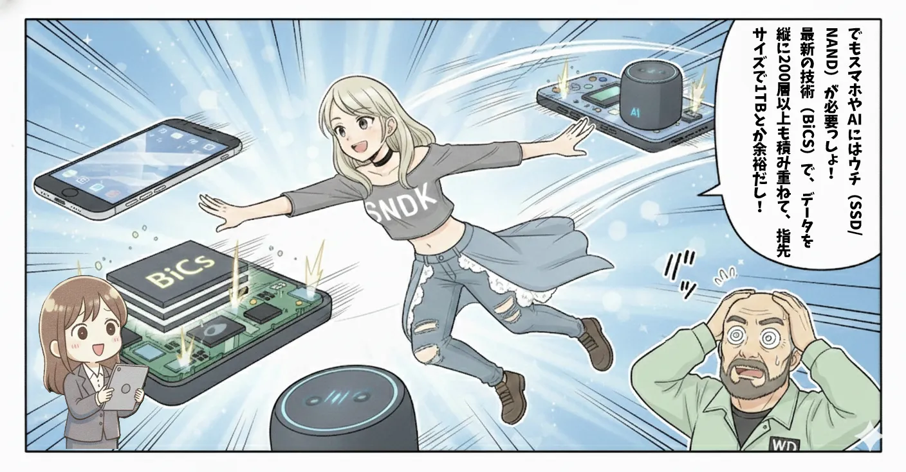
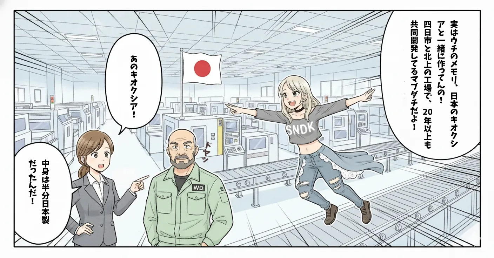
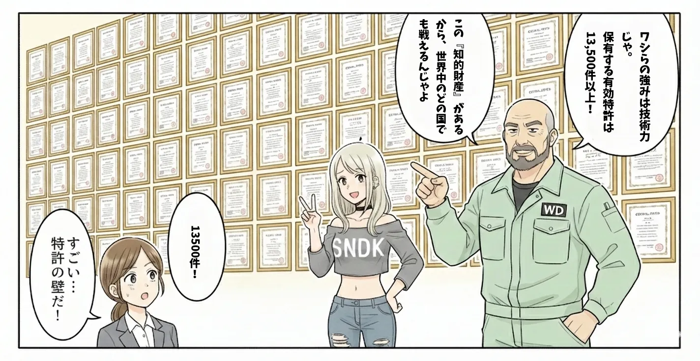
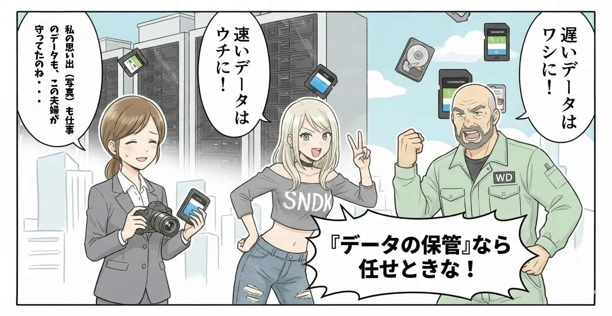

メモリーカードやUSBメモリでおなじみの「SanDisk（サンディスク）」。かつてはストレージ界の巨人「ウエスタンデジタル（Western
Digital）」の傘下でしたが、分社化により独立し、再上場を果たしました。HDDの王者WDCと、フラッシュメモリの雄SNDK、それぞれの現在と展望をサクッと解説します。
"2. サクッともっと詳しく解説！"の「NANDフラッシュ需要がアツイ！！！」のとこもぜひ読んでください！
1. マンガでサクッと解説！
注意！：現在は分社化して別々の会社になりました。






のちに分社化します。つまり、離婚してしまうのであった。
2. サクッともっと詳しく解説！
ウエスタンデジタルは、長らくハードディスクドライブ（HDD）とNAND型フラッシュメモリの2大事業を柱としてきましたが、現在は分社化により別々の会社として歩み始めています。
それぞれの道へ：HDDのWDC、フラッシュのSNDK
専門特化することで、それぞれの市場環境に素早く対応できるようになりました。
- ウエスタンデジタル (WDC)： データセンター向けのHDD事業に集中。圧倒的なシェアと安定した収益基盤を持つ。
- サンディスク (SNDK)： フラッシュメモリ事業として独立。スマホ、AI、PC向けの高速ストレージ需要に特化。
- キオクシアとの提携： サンディスクは引き続き日本のキオクシアと共同製造を行い、開発・生産体制を維持・強化しています。
NANDフラッシュ需要がアツイ！！！
1. NANDフラッシュとは？（超わかりやすく）
NANDフラッシュは、電気的にデータを書き換えられる半導体メモリで、 スマホ・PC・データセンター・車載など、あらゆるデバイスに使われています。
- 電源を切ってもデータが消えない
- HDDより高速
- HDDより省電力
- 小型化しやすい
- 製造技術が進むほどコストが下がる（スケールメリット）
2. NANDの種類（SLC / MLC / TLC / QLC）
サンディスクも含め、NANDは1セルに何bit保存するかで分類されます。
| 種類 | 1セルのbit数 | 特徴 |
|---|---|---|
| SLC | 1bit | 高耐久・高価 |
| MLC | 2bit | バランス型 |
| TLC | 3bit | コスパ良い（現在の主流） |
| QLC | 4bit | 大容量・低コスト・耐久低め |
サンディスクは主にTLCとQLCを大量生産しています。
3. 3D NANDとは？（サンディスクの強み）
昔のNANDは平面（2D）でしたが、微細化の限界により、 現在は縦方向に積み重ねる「3D NAND」が主流です。
サンディスクはキオクシア（旧東芝メモリ）と共同で BiCS FLASH（ビックスフラッシュ）という3D NANDを開発してきました。
- 高層化（100層 → 200層 → 300層へ）
- 低消費電力
- 高信頼性
- 大容量化が容易
サンディスクの技術的な強みは、このBiCS系の3D NANDにあります。
4. NAND市場の特徴（投資家向け）
NAND市場は超サイクル型です。
📈 価格が上がる時
- 供給過剰が解消
- データセンター需要増
- スマホのストレージ容量が増える
- PC・SSD需要が回復
📉 価格が下がる時
- 供給過剰
- メーカーが設備投資しすぎる
- 景気後退で需要が落ちる
サンディスク（SNDK）はこのサイクルの影響を強く受けます。
5. SNDKの強み
-
キオクシアとの長年の技術協力
BiCS FLASHの共同開発で技術力が高い。 -
ブランド力（SanDisk）
一般消費者向けの認知度が圧倒的。 -
データセンター向けSSDの強化
企業向けの高付加価値製品が伸びている。
今後の注目ポイント
🚀 期待できる点
- AIサーバー需要： AIの学習には膨大なデータが必要。その保存先としてHDD、高速処理用にSSD（フラッシュ）の両方の需要が拡大
- 市況の回復： 半導体メモリの価格下落が底を打ち、業績がV字回復する局面にある
- 分離後の機動力： 会社が分かれることで、フラッシュ事業はキオクシア等との再編交渉がよりスムーズになる可能性
⚠️ 注意すべき点
- 価格変動リスク： NANDフラッシュは需給バランスによる価格変動が激しく、業績の波が大きくなりやすい
- 競合の激化： サムスン電子、SKハイニックス、マイクロンなど世界的な強豪との投資・技術競争
- 分離プロセスの不確実性： 分離に向けた時期や条件が、市場環境や規制によって左右される可能性がある
📊 ファンダメンタルデータ
📈 株価チャート
3. まとめ
- ウエスタンデジタルからフラッシュメモリ事業が分離し、サンディスクとして再上場
- WDCはHDD事業、SNDKはフラッシュメモリ事業にそれぞれ専念する体制へ
- SanDiskは引き続きキオクシアと連携し、AI時代の高速メモリ需要に応える
- 投資家は事業ごとの特性に合わせて、WDCとSNDKを別々に投資判断できるようになった